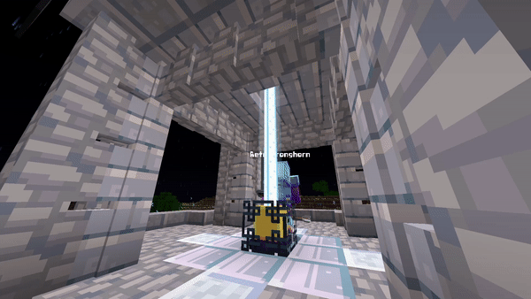

🧭 Lodestones Teleportation
Lodestone Teleportation is a feature that allows you to teleport between lodestones. It provides a convenient way for you to quickly travel within the game world without the need for extensive walking or using other means of transportation. By binding a compass to a lodestone, you can easily teleport to that specific location whenever you desire. It simplifies navigation and saves time, making it an efficient tool for exploring and accessing different areas.

🎁 Features
- Aims to provide a vanilla feel without overwhelming players with excessive features
- The cost of teleportation is determined by the distance traveled
- You can create a new Lodestone compass by right-clicking the compass. Once bound, you can use the compass to teleport
- Right-clicking the compass on another lodestone allows you to teleport back to the original lodestone
- If the lodestone is obstructed or does not have enough free space above it, teleportation to that location will not be possible
📝 Guide
- 🧭 Binding the Compass
To create a new Lodestone compass, right-click the compass on the lodestone. - 🌐 Teleporting
Once bound, you can right-click the compass on another lodestone to teleport to the original lodestone. This action costs experience, and the cost increases the further you wish to travel. - 🔍 Tracking
You can track the lodestone by shift right-clicking with the compass in your hand. This will point the compass to the lodestone it's bound to. - 🚫 Free Space &
Obstructions
If the lodestone does not have free space above it or is destroyed, you will not be able to teleport to that location anymore.